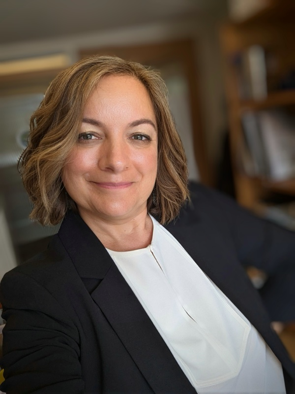

Professor of Environmental Health Sciences-Founding Director, Institute for Water and Health (IWH)

Research leader and founding director with expertise in building interdisciplinary research enterprises at the intersection of water sciences, public health, and engineering. Proven track record in federal funding strategy, research infrastructure development, and global partnerships across academia, industry, and environmental agencies. Known for translating scientific vision into sustainable institutional capacity through strategic program building, cross-sector collaboration, and externally supported growth.
Research Infrastructure Development & Management
Founded and lead a multidisciplinary research institute spanning three integrated units: the Environmental Research and Services Laboratory (ESRL), the Hydrological Modelling and Risk Assessment (HYDRA) Unit, and the Water Academy for environmental education and workforce development.
Research Consortium Building
Built the IC Sewage consortium and lead the IWH Goes Global initiative, forging international research consortia that connect institutions across borders around shared water and public health challenges.
Water Quality & Environmental Microbiology
Tracking fecal contamination sources and pathogen risk across coastal, urban, and rural water systems.
Rapid Diagnostics & Sensing Technologies
Developing portable, field-ready tools for near-real-time water quality monitoring.
Public & Environmental Health Systems
Connecting water science to public health decision-making, risk communication, and policy.
Community-Engaged Research & Workforce Development
Participatory water stewardship programs, environmental education, and training the next generation of water professionals.
Portable X-ray fluorescence spectrometry as a rapid, complementary approach for fecal pollution assessment in water
Advancing circular bioeconomy through a systems-level assessment of food waste and industrial sludge co-digestion